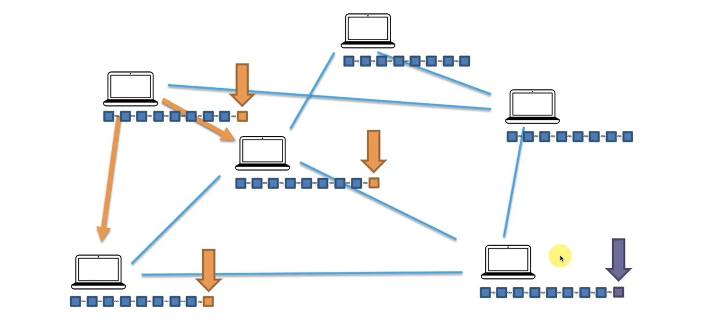

Consensus Protocols

Hello and welcome back.
Now let's talk about the second issue what happens when we add a liquid to miners mine a block almost at the centre of all this say at the same time. Right. Like as shown in above figure. So now all of a sudden we've got we've got a conflict in the chain. How is this conflict going to resolve.
So let's have a look.
this is really where the consensus protocol is like is it at its best. This is very similar to the buys in time for Tolan's and we talked about before. But this is very similar to the general's problem. So what happens. Well marked Node and that block is since it's correct we're going to assume that it's correct there's
no malicious intent or anything it's going to be propagated through a network. So they're propagated or relayed through the network. So there we go.

It got relayed to these nodes. They checked the checks and they accepted this one could relate there. And like when you got to come up with like our own example scenarios in our example scenario maybe the connectivity here is faster. So these got propagated first and then this one is maybe this like longer connection or something. So by the time this one got there it is there is some stuff happening here and then this one got here.
So basically the connection was here was faster here and like the information spread here faster than on this site so that just for the purposes for argument's sake of course in real locations this is much much bigger it is like you know dozens like tens and hundreds of thousands of nodes and then you know like when they far away by the time they like the conflict happens it's not like two versus four it's a much bigger number.
But this still conveys the point will help us understand better. So now what happens is this node and these nodes are trying to like tell the snow that they had this orange walk. But this node is saying to these guys no you add the purple Block. And now here is the orange block at the orange block and he's saying no add the purple find it the connections are gone through it so you can see we've got an issue and this is here you should.
And so what happens what's the consensus protocol in blushes. We remember with the generals their consensus protocol was to look at the average of what you were getting the average of the messages that you're getting and then do that. Right. So you know like somebody saying attack somebody saying retreat and then and then decide from there
you know take not the average take like take the majority. And look there is a majority.
Look at the majority of the messages that you're getting and then do the will change the concerns protocol
is different and brought in block chain what the nodes do is they're like OK that's fine. So you've got a purple walk. I've got an orange walk. You know like OK we've got two versions of the chain right now so we've got competing chains. What are we going to do is we're going to wait and we're going to wait until another block is added. And once that block is added then we'll see which of the two chains is longer.
And so which change basically as a block for you guys or us and then whoever has a block first That's chain wins. You know how many hashes can he check and how can they how many hashes can it check and check them you know together they have a hash in power. And how many hashes can each one of these check that hash are assuming they have the same hash power.
These guys have double the hash and power than these guys. so the orange chain is double the hash and power that then the purple chain which means that statistically speaking these guys have a twice as high chance of finding the next to of solving the cryptographic puzzle first. So solve solving their cryptographic puzzle because all her graphic puzzles are equal.
You just need to find the hash for block. So each one is working on their own. But if you add up the probabilities all together over all that even if they're you know trying to add different blocks and so on.
And so right away the most important conclusion here is that in a block chain the consensus protocol means that 50 of those who have 51 percent of the power or we just more than 50 percent of the power that watch that chain will win. So in that case in that case they cannot come to a consensus.
come to consensus you know block chain. You only need 51 percent and thats from what we just discussed that it basically goes down to probabilities and hash and power. So as long as you have more than 50 percent of the hashing power on one side agreeing more and more than 50 percent of the power coming to a consensus the block chain will come to a consensus. That's very that's a very important feature very important powerful thing of watches. So where would we stop. So yeah so this conflict gets resolved. These blokes go to the side and these blocks you know are actually now called orphan blocks orphaned blocks. These are often orphan blocks.
And so unfortunately the miner that mind this block in the first place there what happens is their transaction Their them their reward is actually contained in that block it's in there it's not like they got they got paid in cash all the transactions. They're actually in the blotching So basically the reward won't be valid anymore. Only this reward will be valid. That and mine are gone.
And also the transactions that were in this block there are no longer valid. So that's why it's important to block change to actually wait until a couple of blocks are added make sure that your transactions are have been accepted and then you know they're not going to be they're not going to be they're not part of a competing chain that's going to lose.
But for now this is what happens this is how the consensus protocol works and that's it. So of course after that the book chain goes to normal.
It is already a normal and you know new blocks are going to be mined. It's going to continue growing. So we've come to a consensus based. And so there we go.
That sums it up. Our saga across the different realms of block chain and we've discussed immutable Ledger distributed P2P networks hash group chugger free mining and finally consensus protocol. I really hope that now you have a good foundation you can see you can feel that you have a good foundation of block chains .
And next we will be studying the practical implementation of blockchain and blockchain programming.Visualization of Blockchain (Blockchain Demo)
 Click here to download App for Blockchain Internship
Click here to download App for Blockchain Internship